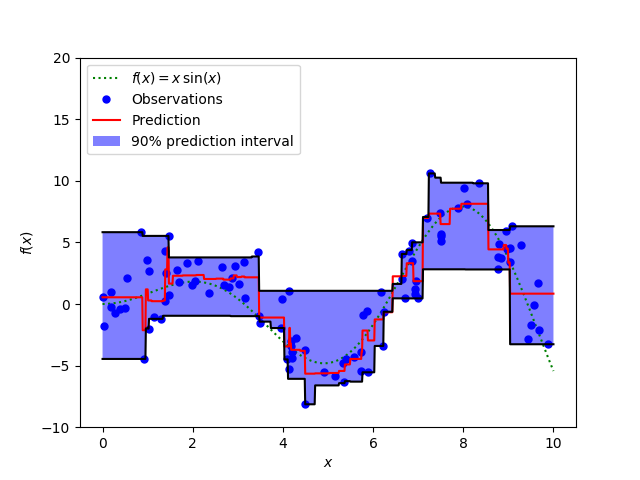

Note
Click here to download the full example code or run this example in your browser via Binder
Prediction Intervals for Gradient Boosting Regression¶
This example shows how quantile regression can be used to create prediction intervals.
import numpy as np
import matplotlib.pyplot as plt
from sklearn.ensemble import GradientBoostingRegressor
np.random.seed(1)
def f(x):
"""The function to predict."""
return x * np.sin(x)
#----------------------------------------------------------------------
# First the noiseless case
X = np.atleast_2d(np.random.uniform(0, 10.0, size=100)).T
X = X.astype(np.float32)
# Observations
y = f(X).ravel()
dy = 1.5 + 1.0 * np.random.random(y.shape)
noise = np.random.normal(0, dy)
y += noise
y = y.astype(np.float32)
# Mesh the input space for evaluations of the real function, the prediction and
# its MSE
xx = np.atleast_2d(np.linspace(0, 10, 1000)).T
xx = xx.astype(np.float32)
alpha = 0.95
clf = GradientBoostingRegressor(loss='quantile', alpha=alpha,
n_estimators=250, max_depth=3,
learning_rate=.1, min_samples_leaf=9,
min_samples_split=9)
clf.fit(X, y)
# Make the prediction on the meshed x-axis
y_upper = clf.predict(xx)
clf.set_params(alpha=1.0 - alpha)
clf.fit(X, y)
# Make the prediction on the meshed x-axis
y_lower = clf.predict(xx)
clf.set_params(loss='ls')
clf.fit(X, y)
# Make the prediction on the meshed x-axis
y_pred = clf.predict(xx)
# Plot the function, the prediction and the 90% confidence interval based on
# the MSE
fig = plt.figure()
plt.plot(xx, f(xx), 'g:', label=r'$f(x) = x\,\sin(x)$')
plt.plot(X, y, 'b.', markersize=10, label=u'Observations')
plt.plot(xx, y_pred, 'r-', label=u'Prediction')
plt.plot(xx, y_upper, 'k-')
plt.plot(xx, y_lower, 'k-')
plt.fill(np.concatenate([xx, xx[::-1]]),
np.concatenate([y_upper, y_lower[::-1]]),
alpha=.5, fc='b', ec='None', label='90% prediction interval')
plt.xlabel('$x$')
plt.ylabel('$f(x)$')
plt.ylim(-10, 20)
plt.legend(loc='upper left')
plt.show()
Total running time of the script: ( 0 minutes 0.462 seconds)